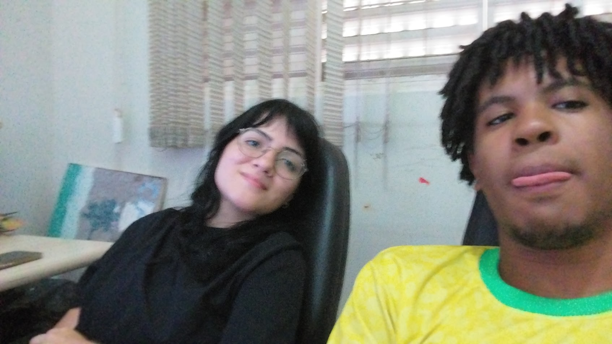
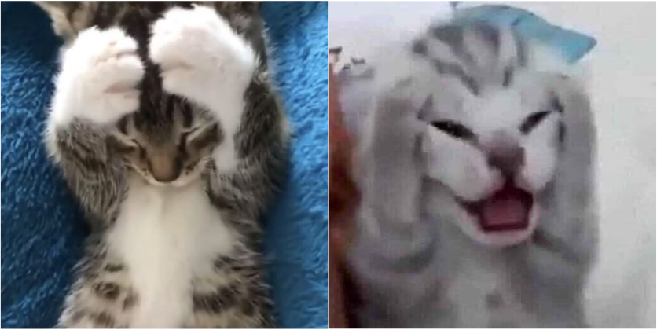

mais que amigos, friends!
samos como gatinhos, se ficam sozinho ficam triste, mas juntos samos boboquinhas
01 / 10
capítulo 1
samos como gatinhos, se ficam sozinho ficam triste, mas juntos samos boboquinhas
assim que nois fica longe um do outro todo fudido quebrado capenga, bipolaridade e depressao mata nos, mas nos juntin ó fica calmin, relaxadin. #sanji>zoro #nicorobincospenabocadaclara>
nós doisgatinhos

nós dois
gatinhos